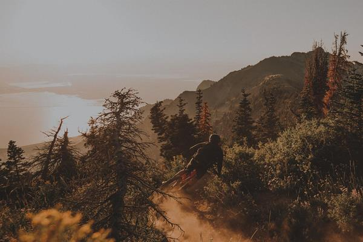

Rennrad
S-Works Tarmac SL8 LTD
Das Aero-Allround-Flaggschiff. Limited Edition Forward 50.
SRAM Red AXSRoval Rapide CLX6,8 kg
80.000 Menschen schauen zu, wie hier aus Carbon Träume werden. Deiner ist der nächste. Beratung, Bikefitting und Werkstatt in Schönberg, Ostbelgien.
"Ich bin der Achim aus den Videos. Seit 18 Jahren baue ich Bikes, die wirklich passen. Komm vorbei, wir finden deins."
Mit Ehefrau Elke und dem Racepoint-Team in Schönberg, Ostbelgien.


Es geht nicht ums Rad.
Es geht um das Gefühl, wenn alles passt.
Vom ersten Tritt bis zum letzten Höhenmeter. Genau dafür bauen wir.


Ein Showroom voller Traumbikes, eine Werkstatt auf Profi-Niveau und der Experte, den du aus den Videos kennst. Mitten in Schönberg, Ostbelgien.
Retuel-Fit und Werkstatt für alle Marken, nicht nur Specialized. Vormittags Werkstatt-Fokus.
Bikefitting-Termin sichern80.000 Menschen schauen zu, wie hier aus Carbon Träume werden. Deiner ist der nächste.
Das Gefühl

Der Trail

Die Strecke
Showroom, Werkstatt und Bikefitting-Studio in Schönberg, Ostbelgien.
Termin · Anfahrt & ÖffnungszeitenSpecialized Elite Händler in Schönberg, Ostbelgien. Der Experte aus den Videos · seit 18 Jahren bauen wir Bikes, die wirklich passen.
Werkstatt arbeitet vormittags.
Racepoint Bike Shop
Schönberg · Ostbelgien
Gut erreichbar aus DE, BE & LU
Das Aero-Allround-Flaggschiff. Limited Edition Forward 50.

Das leichteste Gravelbike, das Specialized je gebaut hat. Für die Ardennen gemacht.
Pures Fahrgefühl statt Aero-Diktat. Einer der leichtesten Rahmen der Welt.
Kompromisslose Aero-Maschine mit Princeton-Laufrädern. Gebaut für Tempo.

Die Zeitfahr-Waffe. Jede Linie auf Windschnittigkeit getrimmt.
Specialized Elite Händler in Schönberg, Ostbelgien. Der Experte aus den Videos · seit 18 Jahren bauen wir Bikes, die wirklich passen.
Werkstatt arbeitet vormittags.
Racepoint Bike Shop
Schönberg · Ostbelgien
Gut erreichbar aus DE, BE & LU
Sag uns deinen Stil, wir zeigen dir die passenden Bikes. Den Rest klärt Achim persönlich.
Aero trifft Leichtbau. Das Allround-Flaggschiff.
Pures Fahrgefühl, kompromissloser Leichtbau.
Kompromisslose Aero-Maschine, gebaut für Tempo.
Das leichteste Gravelbike von Specialized. Für die Ardennen.
Federung an Front und Heck. Komfort für die ganz langen Touren.
Der Trail-Allrounder. Verstellbare Geometrie, GENIE-Dämpfer.

Das Race-Hardtail-Gefühl im Fully. Marathon und XC pur.
Specialized Elite Händler in Schönberg, Ostbelgien. Der Experte aus den Videos · seit 18 Jahren bauen wir Bikes, die wirklich passen.
Werkstatt arbeitet vormittags.
Racepoint Bike Shop
Schönberg · Ostbelgien
Gut erreichbar aus DE, BE & LU
Tarmac SL7 · Rapid CLXCrux · GravelS-Works ShivCervélo S580.000 Menschen schauen zu, wie hier Bikes entstehen, die wirklich passen. Deins ist der nächste.
Seit 18 Jahren baut Achim Leufgen Bikes in Schönberg, gemeinsam mit Elke und dem Team. Retuel-zertifiziert, Specialized Elite Händler, und immer mit der Kamera dabei.
Die ganze Geschichte
Showroom, Profi-Werkstatt und Bikefitting-Studio unter einem Dach. Komm vorbei und erlebe, was du aus den Videos kennst.
Anfahrt & ÖffnungszeitenTarmac SL7 · Rapid CLXCervélo S5 · PrincetonS-Works Shiv
Dein nächstes Abenteuer
beginnt bei uns.
8 typische Racepoint-Kunden haben alle 6 Entwürfe durchgeklickt und ehrliches, ungeschöntes Feedback gegeben. Hier das Ergebnis auf einen Blick · damit du, Achim, die Richtung mit echten Stimmen im Kopf entscheidest.
Bewertung je Entwurf von 1 (gar nicht) bis 5 (begeistert) Sterne. Die 8 Typen sind unten einzeln aufgeführt.
V1 (Cinematic) als Richtung · sie macht Achims Personenmarke und das Video sofort sichtbar, das überzeugt fast alle. Plus die Selbst-Auswahl aus V4 ("Finde dein Bike") einbauen, damit sich auch MTBler, E-Bike-, Einsteiger- und Budget-Kunden gemeint fühlen · die fallen sonst durchs Raster. Dazu echte Eckdaten-Chips (V3) für Specialized-Sucher, "Werkstatt für alle Marken", Öffnungszeiten und eine funktionierende Sprachwahl früh sichtbar.
Wo Achim und Video früh stehen, gewinnt der Entwurf. "Der aus den Videos" wird sofort wiedererkannt und schafft Vertrauen.
MTBler, E-Biker, Einsteiger und Budget-Kunden fühlen sich nicht gemeint ("nichts für mich"). Die Sortiments-Breite ist unsichtbar.
Nur V4 zeigt überhaupt ein MTB. Enduro/Downhill und Fahrwerk-Service fehlen ganz · obwohl Eifel & Ardennen vor der Tür liegen.
Das Wort steht nur im Chat · Einsteiger glauben, es gibt keine. Leasing/Finanzierung fehlt komplett.
Sprachumschalter meist versteckt oder ohne Funktion, CTAs & Chat sind deutsch · Frankophone springen ab. In zweisprachiger Region ein echtes Problem.
Nur V1 sagt früh, dass auch Fremdmarken repariert werden. Service-Kunden brauchen einen eigenen Einstieg oben.
Bewusst keine Preise · aber Familien/Budget-Kunden brauchen ein "für jedes Budget"-Signal, sonst trauen sie sich nicht.
Abo-CTA, "neuestes Video" und Kanal-Link fehlen · der Weg vom Fan zum Lead bleibt offen. Bikefitting nur als Button, nicht erklärt.
| Kundentyp | V1 | V2 | V3 | V4 | V5 | V6 | Favorit |
|---|---|---|---|---|---|---|---|
| 1 · Lokaler Rennrad/Gravel-Enthusiast | 5 | 3 | 4 | 4 | 2 | 4 | V1 |
| 2 · Gezielter Specialized-Sucher | 4 | 2 | 5 | 4 | 3 | 2 | V3 |
| 3 · Werkstatt/Service (alle Marken) | 4 | 3 | 2 | 2 | 1 | 2 | V1 |
| 4 · E-Bike/Einsteiger/Pendler | 3 | 2 | 1 | 3 | 2 | 4 | V6 |
| 5 · Überregionaler YouTube-Fan | 5 | 3 | 4 | 2 | 4 | 4 | V1 |
| 6 · MTB All-Mountain/Downhill | 2 | 3 | 1 | 4 | 2 | 2 | V4 |
| 7 · Preisbewusste Familienradlerin | 3 | 2 | 2 | 4 | 2 | 2 | V4 |
| 8 · Frankophoner/anderssprachiger Besucher | 3 | 2 | 3 | 3 | 2 | 3 | V1 |
| Durchschnitt | 3,6 | 2,5 | 2,8 | 3,3 | 2,3 | 2,9 |
Klarer Sieger. Achim + Video sofort erkennbar, einziger Entwurf mit "Werkstatt für alle Marken" und sichtbarer Sprachwahl. Schwäche: nur Rennrad-Builds · MTBler fallen raus.
Die inklusivste Variante. Selbst-Auswahl Rennrad/Gravel/MTB holt Einsteiger, MTBler & Budget-Kunden ab · die einzige, die MTB überhaupt zeigt. Schwäche: Fan vermisst Community/Video.
Edel und menschlich (Achim-Story), holt Einsteiger ab. Aber kühl, produktarm und Service/Öffnungszeiten zu versteckt.
Top für den gezielten Specialized-Käufer (echte Eckdaten, Video am Bike). Aber rein High-End-Rennrad · schliesst Einsteiger, MTB & Budget komplett aus.
Schön, aber austauschbar: viel Gefühl, kein Achim, keine Bikes, keine Marke. "Könnte jeder x-beliebige Laden sein."
Polarisiert negativ: wirkt wie Energy-Drink-/Discount-Template, deutsch-englischer Stilbruch. Nur der Fan mag die Stats.
Jeweils Bewertung, Favorit und der ehrlichste Satz an dich.
"Dein YouTube-Kanal überzeugt mich schon lange, aber die Seite muss mir klarer zeigen, dass ich einen Termin buche und wirklich mit dir spreche · nicht mit einem Formular."
"Du bist Specialized Elite Händler und weisst mehr über diese Bikes als fast jeder in der Region · zeig das in der ersten Bildschirmhälfte, nicht erst im Footer."
"Schöne Seite, aber ich hätte fast abgebrochen, weil ich erst weit scrollen musste, um zu sehen, dass ihr auch mein Trek anfasst · das müsst ihr viel weiter oben sagen."
"Du bist sympathisch und dein Laden klingt toll, aber deine Website spricht vor allem Leute an, die schon wissen, was ein Tarmac SL8 ist · ich gehöre nicht dazu."
"Deine Website macht dein bestes Asset · den Kanal und deine Persönlichkeit · endlich sichtbar. Aber gib mir auch einen Grund wiederzukommen, bevor ich bereit bin zu kaufen."
"Ich weiss, dass du vor der Haustür dieselben Trails hast wie ich · aber deine Website sieht aus, als wärst du nur für Carbon-Rennräder da, nicht für mich mit meinem Enduro."
"Du bist eindeutig eine Marke für Leute, die Bikes lieben · aber ich brauche ein Signal, dass du auch für jemanden wie mich da bist, bevor ich nach Schönberg fahre."
"Ostbelgien ist zweisprachig und dein Kanal hat Zuschauer in ganz Frankreich und Belgien · aber deine Website spricht mich mit keinem französischen Wort an."
Simuliertes Kunden-Feedback auf Basis der Racepoint-Personas · 8 Kundentypen × 6 Entwürfe · interne Entscheidungshilfe.